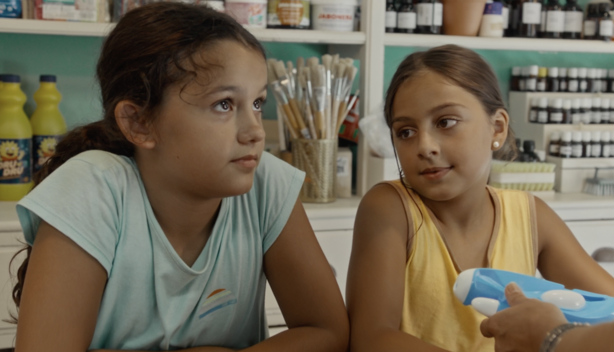
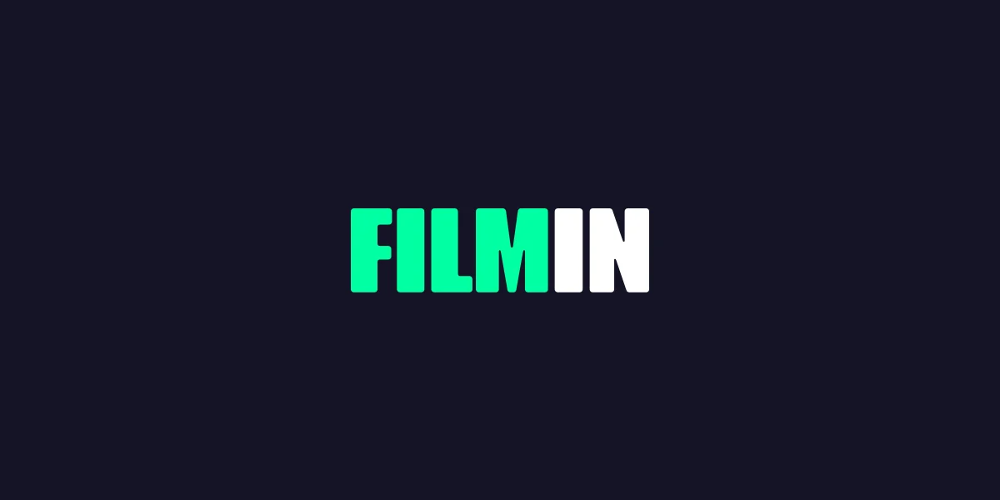
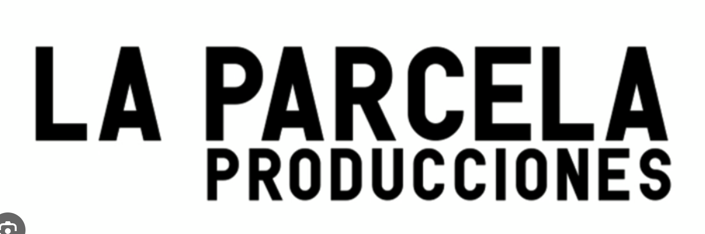
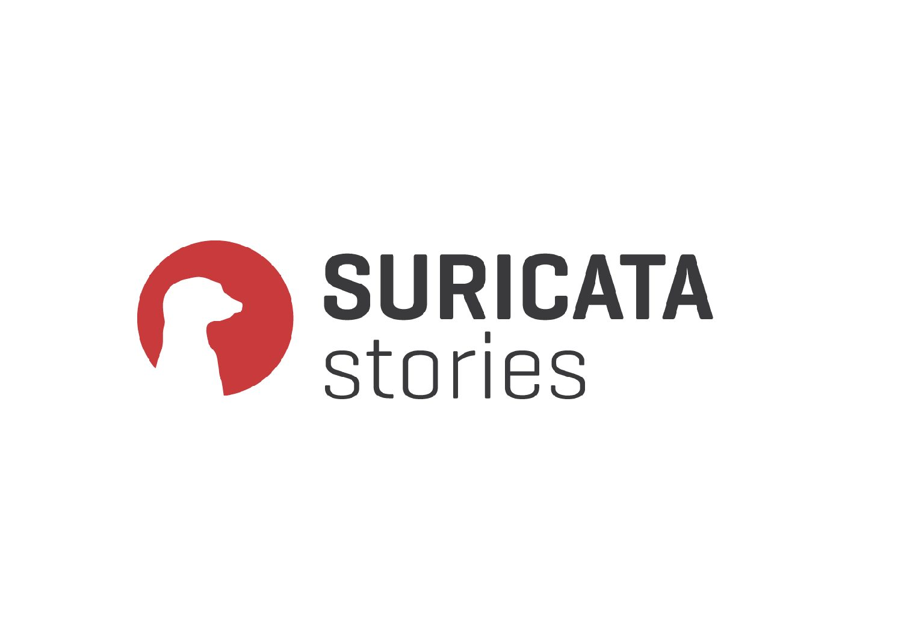

Ficción
Montaje cinematográfico
Film editor
Selección de trabajos
Una selección de proyectos de ficción, documental, publicidad y contenido musical.
Perfil
Soy montadora cinematográfica, formada en la ESCAC (Escola Superior de Cinema i Audiovisuals de Catalunya), donde cursé el Foundation Year y el Grado en Cinematografía. Este año continuaré mi formación con el Máster en Montaje de ESCAC, para seguir profundizando en las herramientas narrativas y expresivas de la edición.

Assistant Trailer Editor

Ayudante de montaje

Productora audiovisual documental
Ayudante de montaje
Contacto
Disponible para proyectos de montaje, ayudantía y colaboración audiovisual.
inesparelladaestrada@gmail.com +34 640 79 57 43